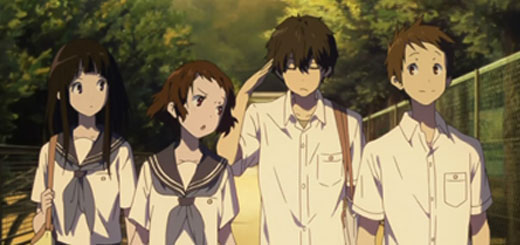
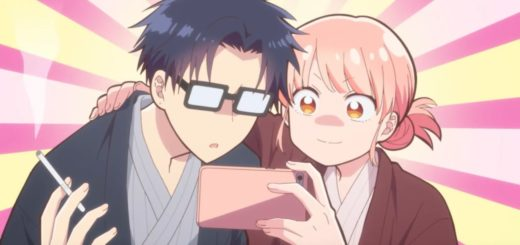
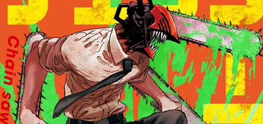

CATEGORIA: TOPS
-

Code Geass - Anime onde o protagonista é frio e calculista, manipulando até sua propria família.
-

Hyouka - Obra conhecida pelo seu protagonista extremamente inteligente, um deus da dedução, porém muito preguiçoso.
-

Kawaii dake ja Nai Shikimori-san - Um protagonista sem sorte alguma, porém com a 10/10 ao seu lado!
-

Wotakoi - O pedido de namoro mais polêmico dos animes! "irei farmar para você, se aceitar ser minha namorada".
-

Blue Lock - Jogos Vorazes, só que é de futebol, os personagens lutam para conseguir se tornar o melhor centro-avante do mundo!
-

Chainsaw Man - Denji, um endividado medíocre com um "animal" de estimação, rosquinhas, geleia e o sonho de uma namorada. O futuro é pica muleque.
-

Classroom of the elite - Um protagonista frio, manipulador, mestrado em artes marciais, estando na pior sala da escola? Veja como ele irá subir de rank!
-

Hataraku maou-sama! - Um rei demônio perde sua batalha contra o herói. Fugindo para a terra, Maou é obrigado a trabalhar, porém, ele foi trabalhar no Mc Donald's!